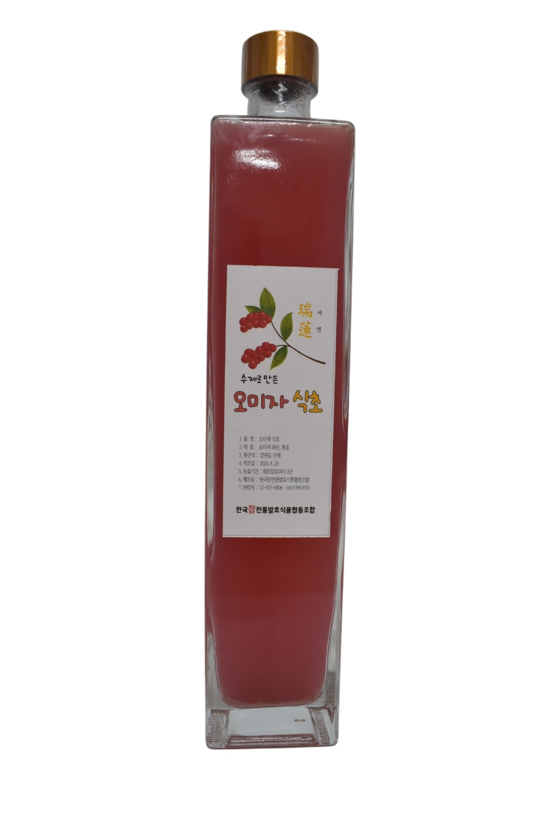
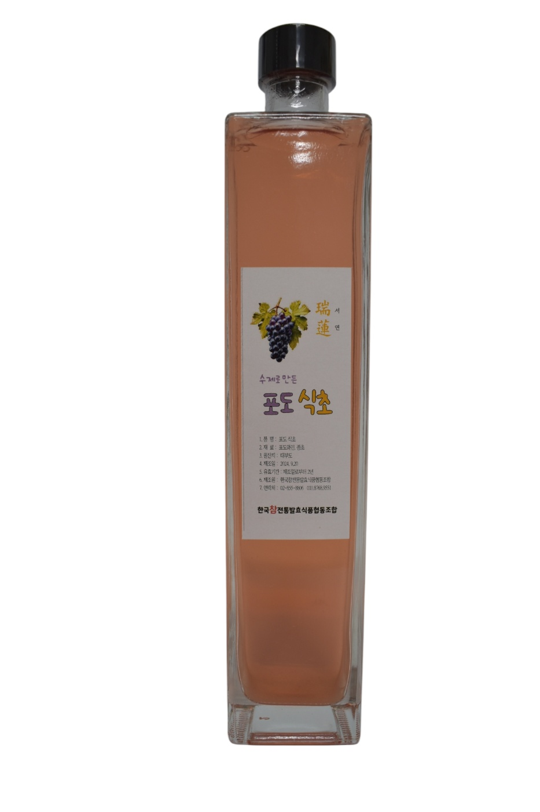
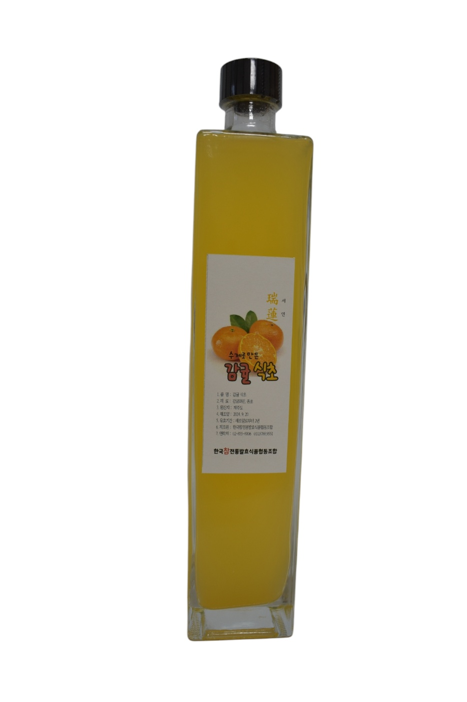
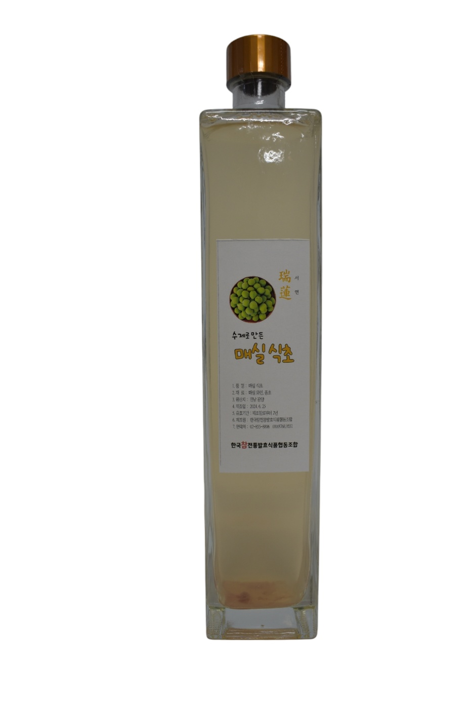
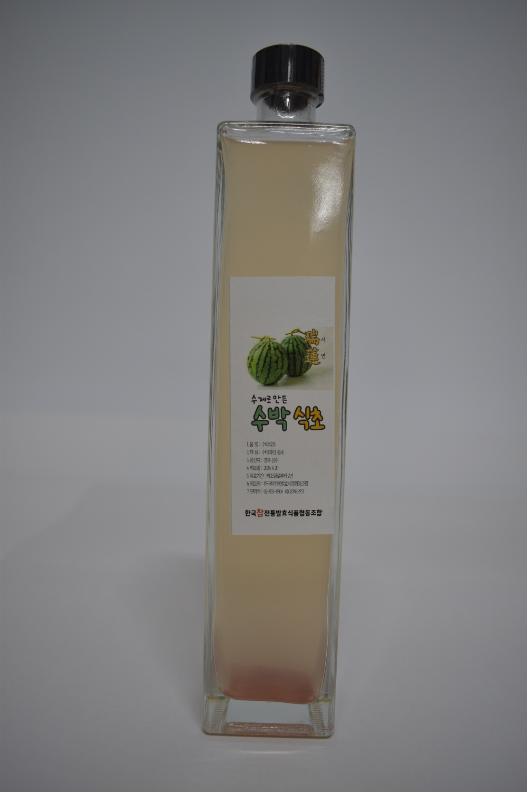
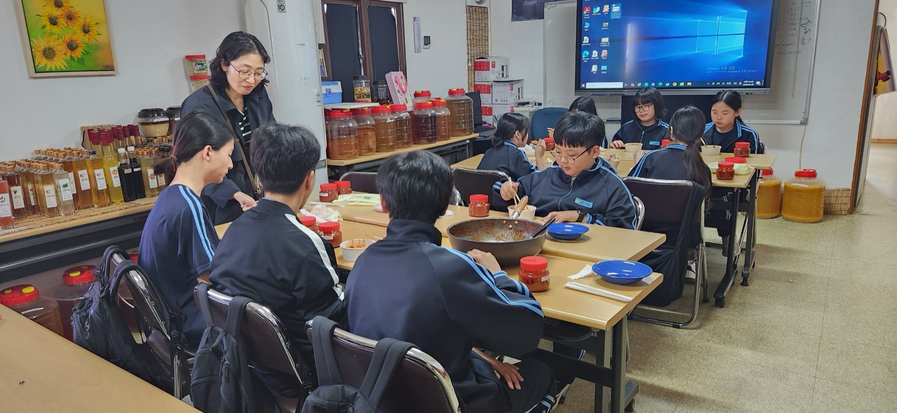

좋은 재료와 바른 방법, 그리고 충분한 기다림.
과일을 청으로 담가 와인으로 빚고, 다시 초산 발효를 거쳐 식초가 됩니다.
우리 조상들은 기원전 6000년부터 곰팡이와 초산균을 이용해 식초를 만들어 먹었습니다. 발효식품은 크게 장류와 식초류로 나뉘는데, 두 가지는 걸리는 시간이 다릅니다.
된장·간장·고추장은 1년이라는 숙성 과정을 거쳐야 제 맛이 납니다. 메주를 띄우고, 장을 가르고, 장독대에서 계절을 넘깁니다.
식초는 40일 정도면 완성됩니다. 비교적 짧은 기간에도 발효의 변화를 경험할 수 있는, 그래서 더 매력적인 식품입니다.
다만 중요한 것은 빠르게 만드는 일이 아닙니다. 좋은 재료와 바른 방법, 충분한 기다림과 정성을 지키는 일 — 조합이 식초를 만들 때 가장 먼저 두는 기준입니다.
설탕에 재운 과일이 청이 되고, 청이 와인이 되고, 와인이 다시 식초가 됩니다. 각 단계마다 정해진 당도와 온도, 그리고 기다리는 시간이 있습니다.
과일(사과·귤·오미자 등)을 설탕과 섞어 청을 담급니다.
숙성시킨 청을 물과 섞어 16브릭스로 맞춥니다.
이스트를 넣어 25~30℃ 발효실에서 발효시키면 와인이 됩니다.
당도가 6브릭스가 되면 초산균(종초)을 섞어 둡니다. 초막이 끼면서 식초가 됩니다.
완성된 식초는 산도를 재어 확인합니다. 산도 6~7 정도가 되면 식초로 완성된 것입니다.
계절에 나는 과일로 그때그때 담그기 때문에, 시기에 따라 만나실 수 있는 종류가 달라집니다.

오미자 식초
포도 식초
감귤 식초
매실 식초
수박 식초이 외에 이런 식초도 담급니다
식초는 신맛이 강하기 때문에 그대로 드시기보다 희석해서 드시는 것이 좋습니다.
식초는 신맛이 강하기 때문에 물이나 다른 음료에 희석하여 섭취하는 것이 좋습니다.
경우에 따라 조금 더 추가해도 되고, 물을 더 타서 드셔도 됩니다.
식초는 단기간에 많이 섭취하기보다, 꾸준히 섭취하는 것이 효과적입니다.
식초는 땀을 흘리게 하는 효과가 있어, 섭취 후 물을 충분히 마시는 것이 좋습니다. 물을 충분히 마시면 탈수 증상이 예방되고, 체내 노폐물을 배출하는 데 도움이 됩니다.
조합의 발효식초는 공인 기관의 시험·검사를 거쳐 적합 판정을 받았습니다. 아래는 실제 시험성적서에 기재된 내용입니다.

천연 재료를 사용하고 철저한 위생 관리를 통해 고품질의 수제 식초와 와인을 만듭니다. 다양한 과일과 청을 활용해 독특한 맛과 향을 가진 제품을 개발합니다.
좋은 재료와 바른 방법,한국참전통발효식품협동조합 대표 김필연
충분한 기다림과 정성.
회원가입 없이 비회원 주문이 가능합니다. 선물상자는 원하시는 식초 종류로 구성해 드립니다.
| 품목 | 용량 | 판매가 |
|---|---|---|
| 수제 발효식초 (소) | 300ml | 25,000원 |
| 수제 발효식초 (대) | 500ml | 35,000원 |
| 수제식초 선물상자 (2본) | 500ml + 300ml | 45,000원 |
| 수제 와인 | 370ml | 35,000원 |
대량 · 도매 주문은 별도 단가로 안내드립니다. 02-855-8806 / 010-8768-9551